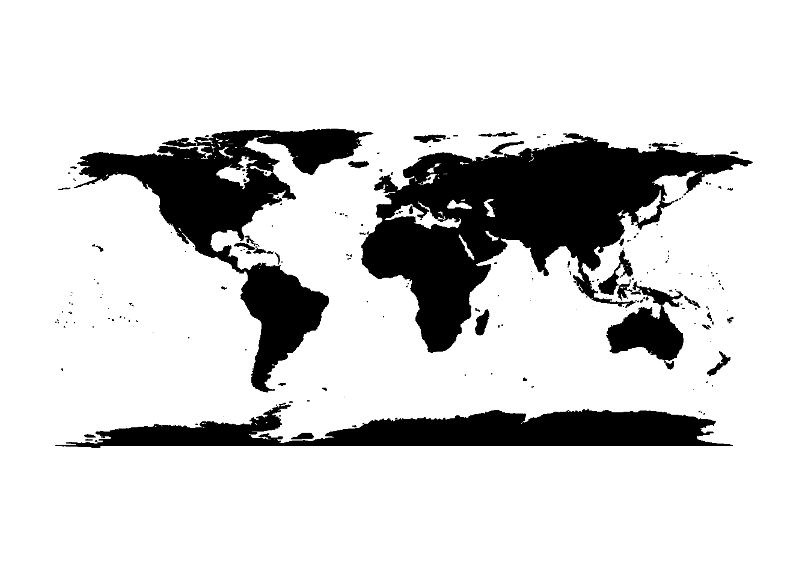
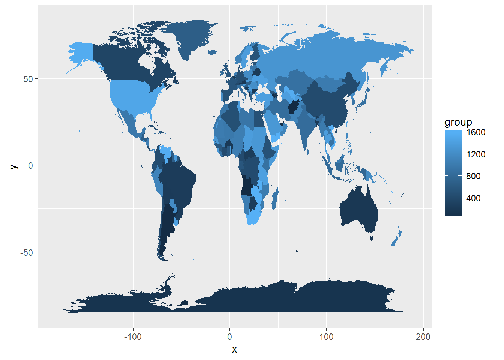
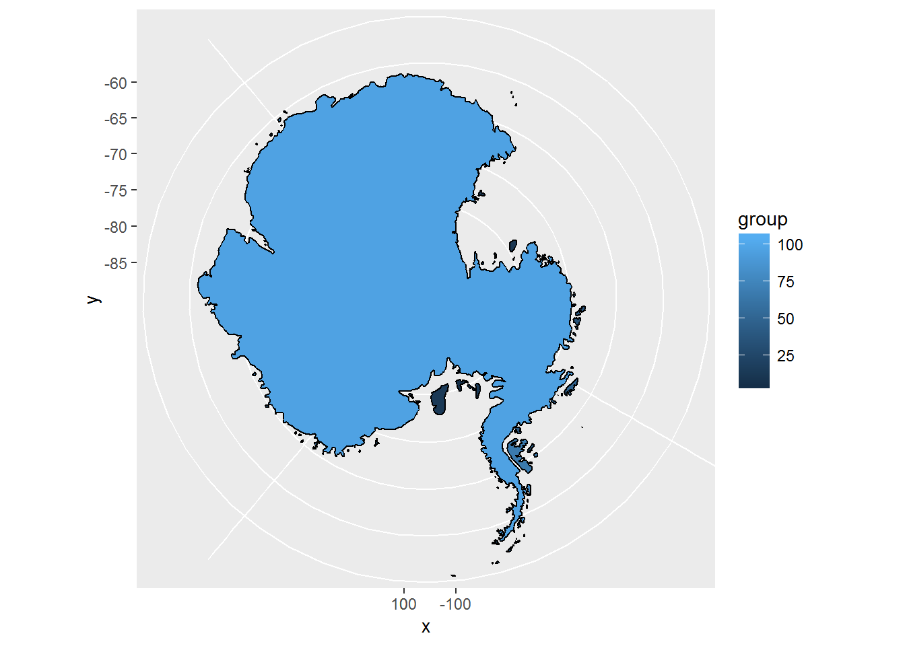
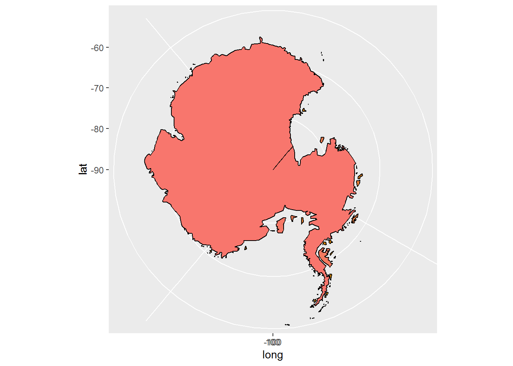
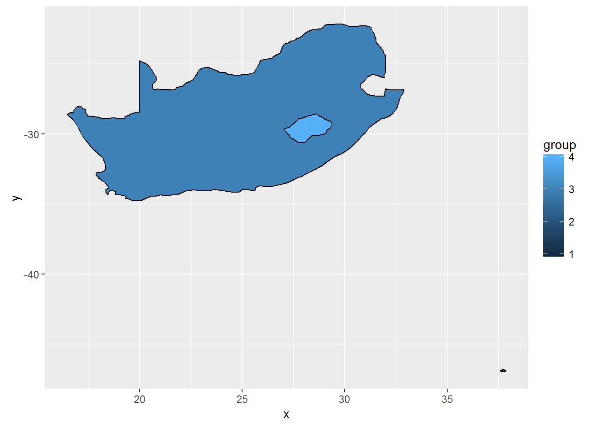
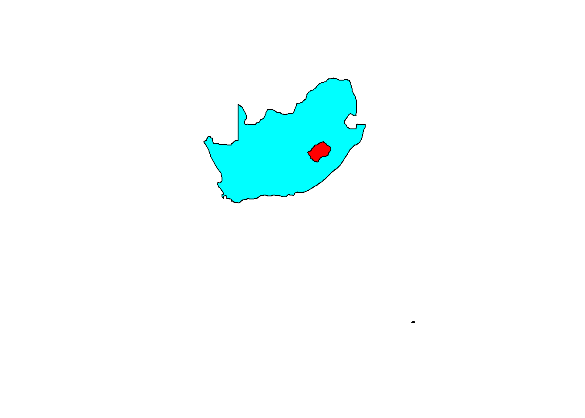
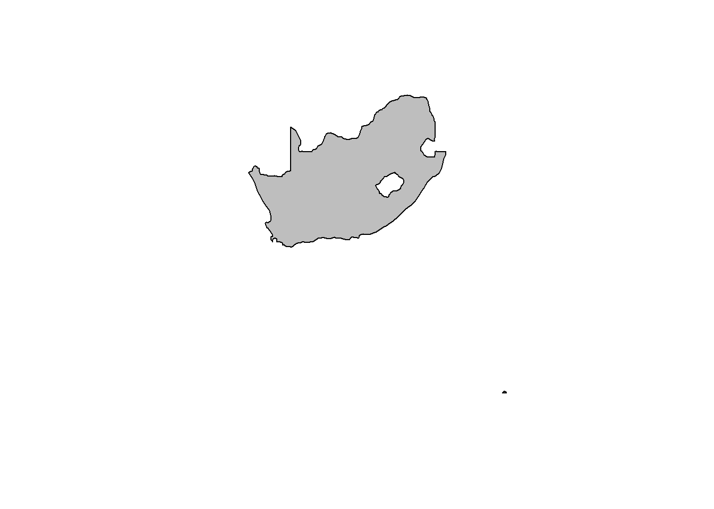
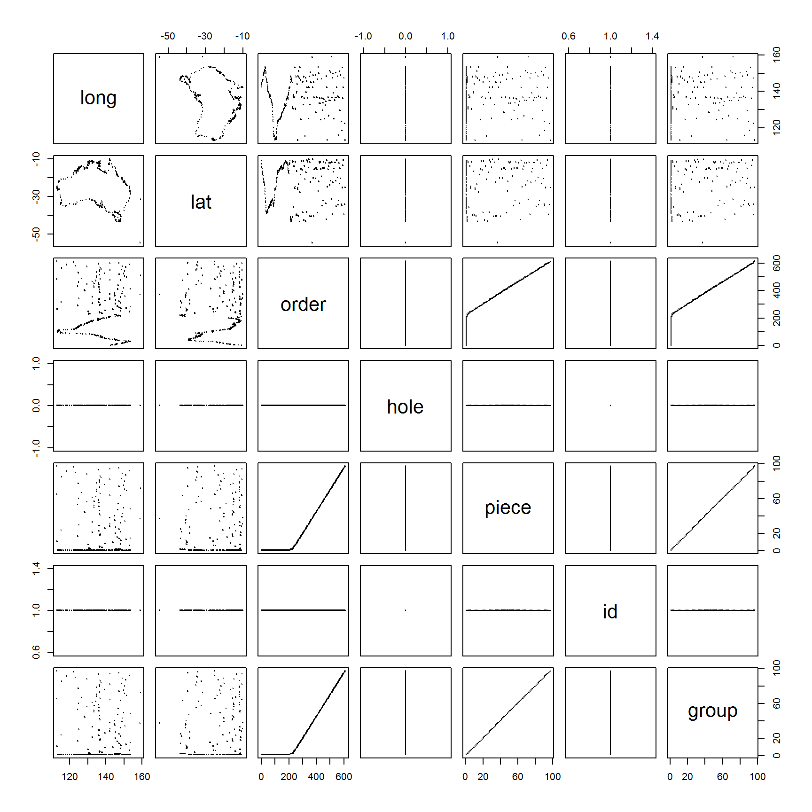

Geometry in tables: the gris model
Michael D. Sumner
2016-10-06
Abstract
This package is a response to some missing use-cases in GIS (geographic information systems) using R. It is an attempt to provide a unified framework for doing the things that GIS traditionally cannot do without awkward workarounds.
With some reservation, I call this the gris model, and it’s being used in the rangl package and in the rbgm package.
The model provides:
- a general, tidy, table-based framework for storing spatial data
- a clear delineation between the topology and the geometry of spatial data, a distinction that is usually muddled
- a unified and general data model that can be used to store any spatial data, and
- a common framework for conversions from and to other formats
Gris can be used to
- convert a flat vector drawing of polygons into a topological mesh of 2D triangles and 1D line segments with X, Y, Z geometry, while maintaining the identity of the original polygons and its discrete attributes.
- to store and transmit complex spatial data via generic storage of tables in databases
- store multi-dimensional geo-spatial data, such as 3d box models with “face” topology, or trajectory data with x, y, z, and time positions for the continuous movement along with continuous or discrete measurements made along the path.
Gris relies on
- dplyr and tibble for sensible and powerful data frames
- spbabel for conversion from and to other formats
Gris does not use nested tables, though see worked discussions on how to do this (in the partner vignettes).
The approach is not a drop-in replacement for existing tools for traditional GIS is R. If there’s a better tool for the job, the recommended approach is to convert to the structures needed by that tool and do it, then return the result to the approach used here as needed.
Implementations
This is an ongoing development. The spbabel package is on CRAN and will be a base package for exploration in the area. Using spbabel I have created the package rangl and that keeps things simple by only providing plotting methods and the right data structures. There is limited support for manipulation and subsetting objects, but most of this uses generic table indexing techniques. It’s not yet clear how much this will be formalized.
The model was originally implemented in the gris package, but that made a number of false starts and over-complicated some apsects. A version of the model is also used in the AustralianAntarcticDivision/rbgm package, but that does not yet have the full rangl lessons. While I was figuring out the next steps from gris I explored nested data frames (from tidyr) and created a package to provide proper holes for ggplot2 polygons in ggpolypath.
Introduction
The sp and ggplot2 packages are both widely used in R for plotting maps. The visualization tools in ggplot2 are very general and can be used for plotting a very wide variety of data visualizations as well as maps, but the data structures used are not aligned with how map data are usually stored. The tools and data structure for sp are aligned with traditional GIS approaches and can be used for a wide variety of map-data manipulations and visualizations, but they are not inherently extensible.
This work aims to bridge these seemingly disparate domains, and bring the general, data frame table-based idioms of ggplot2 into the specialized domain of spatial data. I don’t have a particular problem with either ‘sp’ or ‘ggplot2’ in terms of traditional GIS, but I do have a problem with traditional GIS. It is surprising to me that the limitations, baked-in in the 1990s for understandable reasons(need link to arc-node topology description, complexity of constrained triangulations), are now generally accepted with very little discussion. There are murmurings out there (cf. list elsewhere but include qgis geolife tracks, postgis topology, eonfusion, cgal, whuber, and other simplicial complex examples, )
First we need to explain the key differences between ggplot2 and sp.
Two worlds and two tables
The ‘sp’ package starts with an abstract Spatial class and all other objects extend this base. A Spatial object is a complex S4 classed structure composed of lists of coordinates, values, and metadata. It has
- a data frame of attributes for each individual map object
- a complex hierarchical list of matrices of coordinates (x and y, or longitude and latitude)
- projection metadata
- a bounding box
The geometry is in the complex list, and this is defined just-so by S4 classes with rigourous constraints to conform to spatial standards. This includes determined details such as the “winding” order for rings defining polygon islands or holes, and the details of which hole belongs to which island.
So ‘sp’ objects include three kinds of thing: a data frame, a complex geometry object, and everything else.
A ggplot2 ‘object’ is a data frame, and, ok: it’s not really an object. It has columns:
- “long” and “lat” to store the ‘x’ and ‘y’ coordinates (or longitude and latitude)
- “id” to identify each map object
- “group” to identify each “piece” (polygon ring, line-path, or [multi-]point), unique across all objects
- “piece” to identify each “piece” within “id” (unique only within ID, provides a count of pieces)
- “order” to record the correct winding order, or path order
- “hole” to denote if a polygon ring was a hole or an island
One thing is still missing, since the ggplot2 case is really two data frames. The description above neglects the same data frame of attributes mentioned first for ‘sp’. This table is rarely mentioned explicitly, since in all ggplot2 examples it only gets used in a merge step, to copy its attribute metadata on id to all the coordinates.
The other parts missing from ggplot2 is the details about which hole belongs to which island, the projection metadata, and the bounding box. These things are either computed on the fly (the bounding box) or passed around in an ad hoc way. This is sometimes fine for map data since many systems use “only” longitude-latitude, or an assumed local map projection.
So, ‘ggplot2’ is three things as well: a data frame, the geometry in another data frame, and everything else.
I said that sp objects are “just-so” with “determined details”, but ggplot2 needs exactly the same rigour, it’s just less strict with how you go about it, and is less focussed on stopping you shooting yourself in the foot, or making fish soup.
Specific example
To illustrate the difference between sp and ggplot2, read in a polygon layer from the maps package and convert, and plot.
library(maps)
## there's a long side-story here, that we ignore for now
amap <- map("world", plot = FALSE, resolution = 0, fill = TRUE)
map(amap, fill = TRUE)
str(amap)## List of 4
## $ x : num [1:100964] -69.9 -69.9 -69.9 -70 -70.1 ...
## $ y : num [1:100964] 12.5 12.4 12.4 12.5 12.5 ...
## $ range: num [1:4] -180 190.3 -85.2 83.6
## $ names: chr [1:1627] "Aruba" "Afghanistan" "Angola" "Angola:Cabinda" ...
## - attr(*, "class")= chr "map"This is a simple list structure, with ‘x’ and ‘y’ values separate by ‘NA’, and a ‘names’ vector.
There is a name element for every “NA-separated” section.
sum(is.na(amap$x))## [1] 1626To plot this with gpplot2 we need a single table.
fortify.map <- function(x) {
bad <- is.na(x$x)
seq_ids <- cumsum(bad) + 1L
data.frame(x = x$x, y = x$y, group = seq_ids, id = seq_ids)[!bad, ]
}
library(ggplot2)
amaptab <- fortify(amap)
ggplot(amaptab) + aes(x = x, y = y, group = group, fill = group) + geom_polygon()
Problem 1
If you look carefully there are two big problems, there’s an awkward polygon catastrophe at the “southern boundary” of Antarctica - it becomes clearer if we zoom in.
## for now, it's easier to subset by re-reading
ant <- map("world", regions = "Antarctica", plot = FALSE, fill = TRUE)
ggplot(fortify(ant)) + aes(x = x, y = y, group = group, fill = group) + geom_polygon() + geom_path() 
What is happening in the western corner at 85S? The problem is that in this coordinate system, there’s no extension of the continent to the “south pole”, and so the polygon wraps around awkwardly from the westernmost coordinate to the easternmost, and since the westernmost is not also the southernmost coordinate it is leaving a dangle incorrectly joining the west to the east. The issue is more apparent by including the boundary, with ‘geom_path’, but also consider that this is really a problem created by our choice of map projection. The easternmost and westernmost coordinates in this map are exactly the same place, so it is no surprise that things are a bit funny.
We can “fix” this by putting in dummy coordinates at [-180, -90] and [180, -90] - but this simply patches a symptom rather than solving the problem correctly. We would then get the funny boundary dangle when plotted in a reasonable projection.
Here’s a plot without the extra coordinates at the poles.
library(ggalt)
prj <- "+proj=laea +lat_0=-90 +ellps=WGS84 +lon_0=140"
ggplot(fortify(ant)) + aes(x = x, y = y, group = group, fill = group) + geom_polygon() + geom_path() + coord_proj(prj)
Here’s one where the extra coordinates are present.
library(maptools)
data(wrld_simpl)
ant2 <- subset(wrld_simpl, NAME == "Antarctica")
rownames(ant2) <- NULL
## note it's now called "long"/"lat" not "x"/"y"
ggplot(fortify(ant2)) + aes(x = long, y = lat, group = group, fill = group) + geom_polygon() + geom_path() + coord_proj(prj) + guides(fill = FALSE)## Regions defined for each Polygons
The right answer is to accept that our map extending from 180W to 180E is really bizarre, and we should make a better choice. The ‘maps’ package does not include these dummy coordinates. Many other data sets just put them in. There’s actually a long history about the birth and long dusk of the ‘shapefile’ specification and what was intended that is relevant here.
Problem 2
The second problem is that we are not drawing holes correctly. To see this zoom in on southern Africa, where the Kingdom of Lesotho punches out a hole in South Africa.
## for now, it's easier to subset by re-reading
afr <- map("world", regions = c("South Africa", "Lesotho"), plot = FALSE, fill = TRUE)
ggplot(fortify(afr)) + aes(x = x, y = y, group = group, fill = group) + geom_polygon() + geom_path()
That looks good, but see what happens when we plot just South Africa.
## for now, it's easier to subset by re-reading
library(ggpolypath)
safr <- map("world", regions = "South Africa", plot = FALSE, fill = TRUE)
ggplot(fortify(safr)) + aes(x = x, y = y, group =group, col = factor(group)) + geom_polypath() + geom_path() 
The data for South Africa is literally stored with the hole it needs to be plotted on its own, as well as the same “island” needed for Lesotho. Is this good? Is it what we want? (Think about it, I challenge you to not answer with “it depends”).
We can get the hole with polypath, but this reminds us that we are double-storing a lot of coordinates - this is the same for any neighbouring polygons, all those shared boundaries are not “shared”, they are stored explicitly.
Finally, show that sp plots the hole just fine without any effort.
library(dplyr)
sp_afr <- fortify(afr) %>%
transmute(x_ = x, y_ = y, object_ = unlist(lapply(strsplit(afr$names[id], ":"), "[", 1L)), branch_ = id,
island_ = !grepl("hole", afr$names[id]), order_ = row_number()) %>%
spbabel::sp()
plot(sp_afr, col = rainbow(nrow(sp_afr)))
plot(sp_afr[2, ], col = "grey")
spbabel
What else is missing?
- identifiers on parts, ggplot understands this and maps provides it (with limitations)
- identifiers on coordinates
- topology
There are three functions in spbabel to transfer between ‘sp’ and ‘ggplot2’.
- sptable - decomposes the geometry to a single table (like
fortifybut with different column names) - sp - a driver function to produce Spatial objects, in this case a ‘sp.data.frame’ method
- sptable<- - a replacement version of ‘sptable’ to do the changes “in place”
In simplest form, the journey goes like this.
library(spbabel)
wrld_geom <- sptable(wrld_simpl)
wrld_data <- as.data.frame(wrld_simpl) ## make clear that we need two tables
(sp_rtrip <- sp(wrld_geom, attr_tab = wrld_data))## class : SpatialPolygonsDataFrame
## features : 246
## extent : -180, 180, -90, 83.57027 (xmin, xmax, ymin, ymax)
## coord. ref. : NA
## variables : 11
## # A tibble: 246 × 11
## FIPS ISO2 ISO3 UN NAME AREA POP2005 REGION
## <fctr> <fctr> <fctr> <int> <fctr> <int> <dbl> <int>
## 1 AC AG ATG 28 Antigua and Barbuda 44 83039 19
## 2 AG DZ DZA 12 Algeria 238174 32854159 2
## 3 AJ AZ AZE 31 Azerbaijan 8260 8352021 142
## 4 AL AL ALB 8 Albania 2740 3153731 150
## 5 AM AM ARM 51 Armenia 2820 3017661 142
## 6 AO AO AGO 24 Angola 124670 16095214 2
## 7 AQ AS ASM 16 American Samoa 20 64051 9
## 8 AR AR ARG 32 Argentina 273669 38747148 19
## 9 AS AU AUS 36 Australia 768230 20310208 9
## 10 BA BH BHR 48 Bahrain 71 724788 142
## # ... with 236 more rows, and 3 more variables: SUBREGION <int>,
## # LON <dbl>, LAT <dbl>The table ‘wrld_geom’ carried its map projection string with it as an ‘attribute’, but this is not reliable without creating methods for a special class. We can make sure it’s carried using a manual step.
wrld_geom <- sptable(wrld_simpl)
wrld_data <- as.data.frame(wrld_simpl) ## make clear that we need two tables
wrld_prj <- proj4string(wrld_simpl)
(sp_rtrip <- sp(wrld_geom, attr_tab = wrld_data, crs = wrld_prj))## class : SpatialPolygonsDataFrame
## features : 246
## extent : -180, 180, -90, 83.57027 (xmin, xmax, ymin, ymax)
## coord. ref. : +proj=longlat +ellps=WGS84 +datum=WGS84 +no_defs +towgs84=0,0,0
## variables : 11
## # A tibble: 246 × 11
## FIPS ISO2 ISO3 UN NAME AREA POP2005 REGION
## <fctr> <fctr> <fctr> <int> <fctr> <int> <dbl> <int>
## 1 AC AG ATG 28 Antigua and Barbuda 44 83039 19
## 2 AG DZ DZA 12 Algeria 238174 32854159 2
## 3 AJ AZ AZE 31 Azerbaijan 8260 8352021 142
## 4 AL AL ALB 8 Albania 2740 3153731 150
## 5 AM AM ARM 51 Armenia 2820 3017661 142
## 6 AO AO AGO 24 Angola 124670 16095214 2
## 7 AQ AS ASM 16 American Samoa 20 64051 9
## 8 AR AR ARG 32 Argentina 273669 38747148 19
## 9 AS AU AUS 36 Australia 768230 20310208 9
## 10 BA BH BHR 48 Bahrain 71 724788 142
## # ... with 236 more rows, and 3 more variables: SUBREGION <int>,
## # LON <dbl>, LAT <dbl>What is the point of doing this? We can modify the data using standard table tools.
wrld_geom <- sptable(wrld_simpl[9, ])
wrld_prj <- proj4string(wrld_simpl)
sp(wrld_geom, crs = wrld_prj)## class : SpatialPolygonsDataFrame
## features : 1
## extent : 112.9511, 159.1019, -54.74973, -10.05167 (xmin, xmax, ymin, ymax)
## coord. ref. : +proj=longlat +ellps=WGS84 +datum=WGS84 +no_defs +towgs84=0,0,0
## variables : 1
## # A tibble: 1 × 1
## rownumber_
## <int>
## 1 1wrld_geom$object_ <- wrld_geom$branch_
sp(wrld_geom, crs = wrld_prj)## class : SpatialPolygonsDataFrame
## features : 97
## extent : 112.9511, 159.1019, -54.74973, -10.05167 (xmin, xmax, ymin, ymax)
## coord. ref. : +proj=longlat +ellps=WGS84 +datum=WGS84 +no_defs +towgs84=0,0,0
## variables : 1
## # A tibble: 97 × 1
## rownumber_
## <int>
## 1 1
## 2 2
## 3 3
## 4 4
## 5 5
## 6 6
## 7 7
## 8 8
## 9 9
## 10 10
## # ... with 87 more rowsSee how we decomposed all the parts into their own object, and once we return to Spatial that is reflected in the number of objects.
The replacement method allows this to be done without breaking anything apart, so this is the more “user-level” function, where ‘sp’ and ‘sptable’ are for developers. With this version we can very easily pipe our geometry modifications in convenient syntax.
wrld <- wrld_simpl[9:10, ] ## pick two objects this time
sptable(wrld) <- sptable(wrld) %>% mutate(object_ = branch_)
wrldThere is a gotcha here in that if we had any “holes” they would now be “non-hole” objects, but with that caveat in mind it’s a powerful way to work with these data.
Note that the attribute data were dropped as it is now ambiguous as to what values corresponde to which objects, and that information is external to the replacement methods. (The ‘sp::disaggregate’ function is really a better way to do that particular task.)
This is not done with a single object with a special class, but it could be. See document on an S3 class for fortified, single-nested, and double-nested forms.
Tables are systematic by default
Perhaps the best thing about having everything stored in two tables is that we can push it out to a database, pass that to someone else and everything is transferred correctly.
Let’s send a fortified copy of the maps “county” data set to someone in a ‘SQLite’ database.
library(dplyr)
library(tibble)
library(maps)
library(ggplot2)
db <- src_sqlite("data-raw/maps_county.sqlite3", create = TRUE)
mp <- map("county", plot = FALSE, fill = TRUE)
## todo make sure the object ids are right
## and that these are sp()-able - add interpreters for the fortify form (?)
geom <- copy_to(db, fortify(mp), name = "geom", temporary = FALSE)
## I can be a bit old-fashioned
statename <- substr(mp$name, 1, unlist(gregexpr(",", mp$name)) - 1L)
countyname <- substr(mp$name, unlist(gregexpr(",", mp$name)) + 1, nchar(mp$name))
dat <- copy_to(db, tibble(county = countyname,
state = statename, group = seq_along(statename)), name = "metadata", temporary = FALSE)
geom
dat
rm(geom, dat, db)Another document that receives this database and explores nesting, demand-read.
Tidy tables
We have tidied up in one sense, we’ve removed a complicated object with specialist requirements and created two tables that can be plotted and manipulated with generic tools.
There is redundancy in the geometry table. ‘Tidy’ means ‘3NF’ or ‘third-normal-form’, and 3NF means that we remove the repeated values that could be stored just once.
Notice what we actually have in the “fortified” version of an sp object.
allnumbers <- function(x) {x[] <- lapply(x, function(a) if(is.character(a)) as.integer(factor(a)) else as.numeric(a)); x}
oz <- subset(wrld_simpl, NAME == "Australia")
plot(allnumbers(fortify(oz)), pch = 19, cex = 0.2)## Regions defined for each Polygons
Clearly there’s really not much information in the fortified table after you have dealt with the x and y coordinates, there’s a lot of wasted storage here. It gets worse if we copy on attributes from the “id” attribute table, we simply copy out more redundant data.
‘Spatial’ classes avoid this wastage by not exploring the encoding explicitly on every coordinate, but in one of two ways, either
- implicitly, or
- just once as a sort of “label” attribute
The implicit examples are ‘order’, the right order for the coordinates is just the order they come in, the ‘piece’ value is either 1, or 2+ depending on a list of length 1 or more, and id and group are the same. Group and piece are really aliases, just one is absolute (to the entire set) the other relative (to position within a geometry) .
Tags such whether it is a hole or not is an “attribute” tagged onto the object that holds the matrix of coordinates. We don’t see the “comments” attribute here, which in sp (if present) tells us which piece ‘belongs’ to which other piece (i.e. when it’s a hole, what island is it a hole of?).
Again, this is discussed [elsewhere] but the crux is the need for comments is a legacy of the “shapefile” era, no longer necessary in this the “simple features” era. More on that later.
(There are subtle rules and conventions about ordering and holes, which is discussed [elsewhere]).
How do we remove this redundancy?
- Create complex nested objects (we already have sp, maps, and other examples).
- Create “tidy(-ish)” tables using nesting, there are at least three ways to do this (gggeom, single, double nesting)
- Create normalized tables and put like with like.
Normal form by stages
Storing data in tables without unnessary redundancy is called “normal form”. This goes a step further from the basics of tidy data being rows of observations with all columns as variables.
To convert spatial vector data to normal form we need the to first identify the entities that exist. These are
- Objects - a.k.a. Features, or specifically polygons, lines, points, multipoints
- Branches - a.k.a. Parts, or Pieces, specifically individual closed linepaths, line strings, individual coordinates
- Vertices - a.k.a. coordinates.
If we create a “Branches” table by normalizing from the geometry table, we will have three tables, one with all the x/y coordinates and their part ID and order within part, the parts table with attributes part ID, island status, and the object metadata table.
A benefit here is that the size of data may be reduced, though it depends on how much data we have versus the number of IDs we need to link the tables.
Four tables
Further normalization inserts a link table between branches and vertices, and puts the order and vertex id on this. This table should be thought of as the “instances of vertices”, since this is where we explicitly store the use of an indvidual vertex by a branch. We don’t need to store the same vertex again and again, just a link to it. This makes it easier to identify which coordinates are shared.
Other benefits include
- further data reduction
- removal of duplicated coordinates
- ability to read/query arbitrary elements
Note that the vertex table by default will be de-duplicated on X and Y, so we can store another pair of these transformed e.g. Longitude and Latitude, but the de-duplication process would be different if performed on three coordinates, or four. By default for now we only discuss doing this on X and Y (which may be Longitude and Latitude), because this is what gives us topology for the most common 2D case, and is absolutely required by the triangulation process in RTriangle.
Let’s send a normal form copy of the maps “county” data set in a ‘SQLite’ database.
library(dplyr)
library(tibble)
library(maps)
library(ggplot2)
db <- src_sqlite("data-raw/maps_county_nf.sqlite3", create = TRUE)
mp <- map("county", plot = FALSE, fill = TRUE)